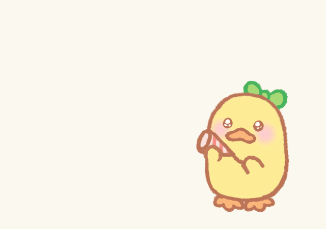

← All devlog postsAnimation notes
Shark and Youyou pop confetti
We just finished animating Shark and Youyou’s party poppers!
By Atelier Seal & SharkShark’s limited-edition party popper
Shark made this special party popper by hand! Classic Shark, with opinions on even the tiniest props.
 Shark pulls a handmade party popper, sending confetti drifting to the right
Shark pulls a handmade party popper, sending confetti drifting to the right
Youyou’s party popper
Youyou’s party popper animation is so cute. It really shows off Youyou’s curves! XD

Youyou faces left and pulls a party popper, with confetti falling around their feet